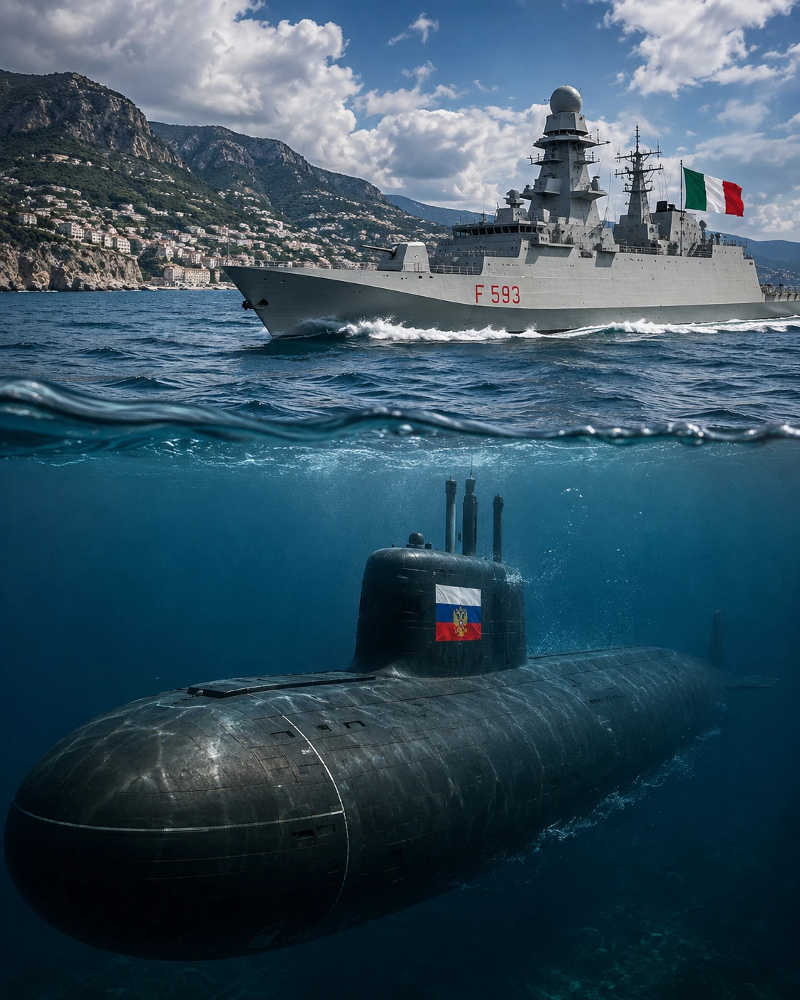

Politica internazionale • Mediterraneo
FINE DELLA GUERRA FREDDA?
Oggi lo scenario è più caldo di quanto pensiate.
Continua l’indagine →
In evidenza

Politica internazionale • Mediterraneo
Oggi lo scenario è più caldo di quanto pensiate.
Continua l’indagine →Ultime indagini

Economia • Industria
Costi pubblici, ArcelorMittal, sindacati, cordata italiana e decarbonizzazione di Taranto.
Leggi l’indagine →
Politica italiana • Europa
Schlein, Meloni, AMMR, Ceuta e il compromesso europeo sui trasferimenti.
Leggi l’indagine →
Politica italiana • Informazione
Report, oltre 220 azioni legali, Rai, audience e il ciclo mediatico della querela.
Leggi l’indagine →Altre indagini recenti

Società
Borseggi, querela, riforma Cartabia, minori e misure cautelari.
Leggi l’indagine →
Politica italiana
Tre secoli di immunità parlamentare, dalla Costituzione alla comunicazione permanente.
Leggi l’indagine →
Politica italiana
Salvini, Zaia, Vannacci e gli scenari sul prossimo assetto politico italiano.
Leggi l’indagine →Archivio completo
Le indagini che escono dalla prima pagina non vengono eliminate: restano disponibili nell’archivio e possono tornare in evidenza quando il tema torna attuale.
«Noi cerchiamo i fili che controllano la società.»